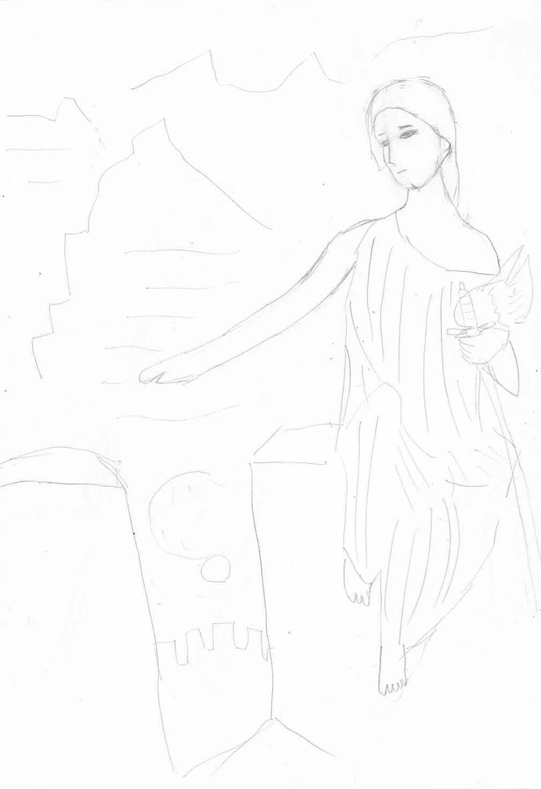
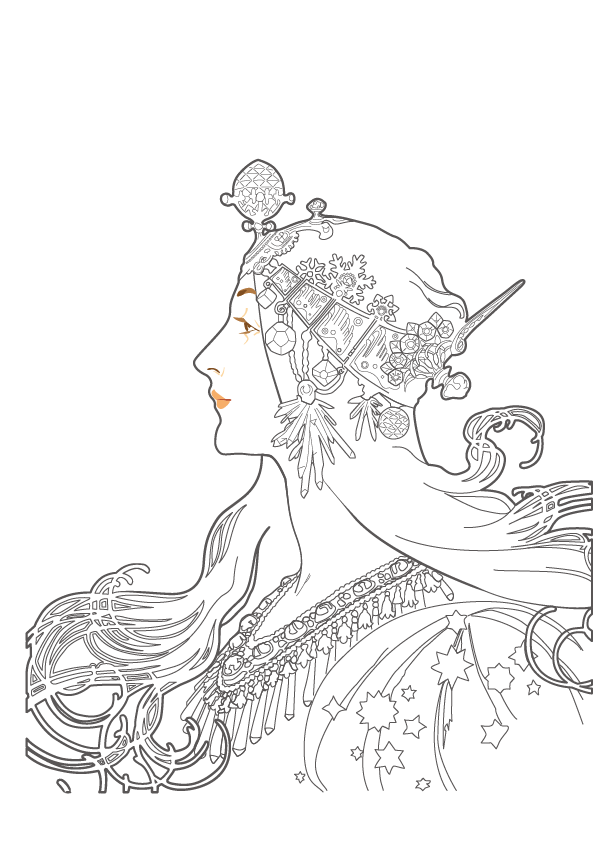
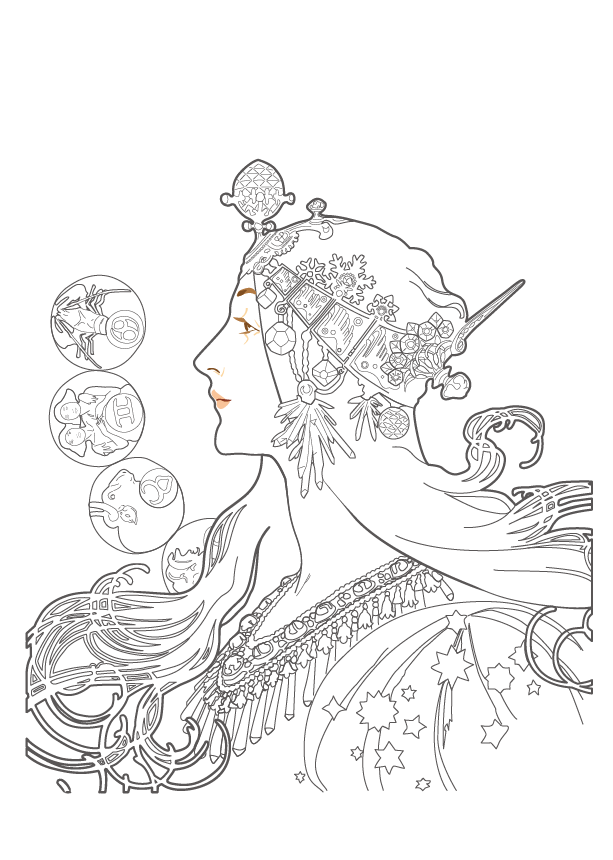

美術・イラストの世界観１（描画手法）です。パース・遠近法・透視図法や美術・イラストの世界観２（美術史）も参照のこと。
音楽の世界観は分割しました。デザインの世界観や漫画・アニメの世界観も参照してください。
絵を描くためには、色んなことを考えることです。
たとえば、そのものの描き方を考える上でも、「ものの形や形状」「大きさ」「位置」「向き」などが考えられます。
最初は、「形や形状」を考えるところから始めます。形を考える上でも、「大きさ」や「位置」や「向き」を正確に描けるように、デッサンで考えます。
また、もの空間に配置するためには、「拡大率」「角度」「前後関係」「空間における並行と垂直の表現」が考えられます。
たとえば、都市の中に人間を配置する場合、どれくらいの大きさで人間を拡大・縮小しなければならないかを考えなければなりません。二階建てのビルよりも大きく人間を描いてはいけません。
特に、物理空間は3次元を2次元に直す作業であり、数学の図のように並行な直線でも、透視図法のように消失点に対する角度として描かなければいけません。「部屋の中にまっすぐに境界線を引く」だけでも、高さ、幅、奥行きの「直線の方向」を揃える必要があります。透視図法では、目線の位置と「最終的に消失する場所＝消失点」がどこにあるかから考えます。
また、たとえばものを持つようなものを書く場合には、「作用点（掴んでいる手）とものの間でどのような形状の変化が起きるか」を考えないといけません。掴むのか、投げるのか、吊るすのか、などによっても変わります。これは手で首根っこをつかんで吊るした猫のような柔らかいものに対してなどが考えられます。
人間を描くのであれば、人間の「見た目」と「行動」があります。走っている人間を描くためには、走る時はどのように走るのかを知り、考えなければなりません。その人間がその行動をしている際、どのように「骨格」や「筋肉」が曲がるかを考える必要があります。骨格には「曲がることのできる限界点」があり、その限界点以上に曲がってはいけません。曲がる範囲がどこからどこまでであるかを考えながら、3D人形を動かして、「自然で正しい人間（あるいは動物）の形」を平面上に作り出します。
また、体を描くのであれば、投身を考えます。七等身の体をベースに考えると良いでしょう。一番上の一等身が頭、その下の三等身が体（胸から腹）、その下の三等身が脚になります。また、両腕を伸ばした長さが身長と同じになります。男の体は逆三角形に、女の体はひし形に描きます。女性の場合はウエストと腰に注意が必要で、ウエストを細くし、腰は子供（胎児）が入ってもおかしくないぐらい大きく描きます。
この時、胸に胸部を抽象化した逆三角形のハートを入れて、腰に骨盤を抽象化した半分の高さの逆でないハートを入れると、綺麗にデザインできます。（詳しくは全身の描き方その一 - 人を描くのって楽しいねが参考になります。）
また、顔を描くのであれば「顔のパーツの位置や大きさ」を知っておく必要がありますし、「目や口の表情」もデフォルメしながら考えて作る必要があります。特に目については、「どのように描けば可愛く描けるか」が重要であり、リアリティとデフォルメをバランスよくとりながら、「まつ毛や瞳などをどう描くか」が重要です。特に女性であれば、本当の目よりも大きくまつ毛などを描かなければ可愛さは出ません。まつ毛を太く、中の瞳を綺麗に描き込むことで、プロの漫画家が描くようなデフォルメした目が描けます。
綺麗な人間の絵を描くためには、「人間をどのように美しく書くか」を知っておかなければなりません。たとえば鼻をどのように描くか、頭と顔の中にどのような形状でどの位置にどの大きさでパーツが配置されるか、顔の向きや表情によってどのようにそのパーツが変わるのか、ということを考えます。基本的に、頭を丸で描いたら、それを半分、その半分、その半分の位置に線を引いて、そこに目（真ん中）、鼻（目とあごの真ん中）、口（鼻とあごの真ん中）を配置すると綺麗に配置できます。また、顔の正中線に両目と耳が、垂直線に鼻と口とあごが配置されます。
また、複雑な図形を描く時は、「同じ大きさの丸や四角に置き換えて描く」という手法が使えます。たとえば家屋や建物や自動車や木などを描く時に、同じ大きさの四角形に直して、その上で「その平面に配置するのであれば（数学的に）どう描けばいいか」を考えます。
また、単純に輪郭線だけではなく、テクスチャも考えなければいけません。陰（シェード）を描く時は、「光がどの方向からどのように当たっているのか」を考え、表面が100%明るくて裏面が100%暗い場合、それぞれの面がどれくらいの明るさになるかを、等間隔で変わっていく100%～0%の間で考えます。また影（シャドウ）を描く時も、どの方向から光が当たっているかを考え、その「光の向きがまっすぐに影を作り出すとしたら」という光の延長方向を考えて、四角形を棒に直して長さを考えます。
これらに加えて、ものや風景を描くために、「質感」や「形状の変化」を考えます。雪が積もるとはどのように積もるのか、波が立つとはどのような立つのか、雲はどのようにできるのか、森や林は人間から見てどのように見えるのか、などを考えなければいけません。「どのように描けば綺麗に見えるのか」を、頭と手の両方を使って考えます。
絵を描くのは簡単に見えて、多くのことを考えなければなりません。最初のうちは、「形状・大きさ・向き＋位置・拡大率・角度」のように考えることが良いと思います。
また、必要なのは「考えていろいろと変えてみる」ことです。「手を使う」ということが自由の基本です。
また、イラスト制作のコツは、対象の特徴を捉えることです。
たとえば、ウサギを描くのであれば、長い耳と赤い目が特徴的です。カエルを描くのであれば、目が顔よりも飛び出ているところやビョーンと伸びる脚などが特徴的だと思います。
動物だけではなく、仕事をしている職業の人やものを描くのであっても、特徴を大きく描くようにすることで、可愛いイラストが描けます。
模写は単純ですが、最初は有名絵画のような難しすぎる目標を立てずに、ネットで検索して出てくるような「アニメのイラスト」から始めましょう。
透視図法を習得することで、綺麗な町や建物が描けるようになります。パース・遠近法・透視図法を参照のこと。
絵を描くコツは、人間は0.1mmや0.01mmまでは認識できても、0.0001mmまでになると認識できないということ。
つまり、ある程度細かくすれば、それで綺麗な絵になるのです。そこが分かってしまえば、綺麗な絵が描けるようになります。
人間が認識できないところまで、完璧に細かく描きましょう。そうすれば上手い絵になります。
また、絵の修練のコツはデッサンすることです。楽しくデッサンしていれば、上手くなるでしょう。
ものの形を覚えるためのコツは、なぜその輪郭がそうなるのかを考えながらデッサンを繰り返すことです。描いていれば、覚えるでしょう。
実際のところ、絵を描くということは、頭の中で見たものと輪郭を変換する作業です。
最初は難しいですが、慣れると、簡単にものを輪郭にできるようになります。
輪郭をなぞるのが難しい時は、四角形を輪郭の周りにひいて考えましょう。そうすることで、たとえばカーテンのような難しい曲線でも輪郭をなぞることができます。
人間を描く時のコツは、人間を「回転する手足のついた胴体」だと考えることです。
人間を、手足のついた胴体すなわち丸だと考え、それを回転させることで、輪郭線をとりやすくなります。
イラストを描く、ということは、まず、輪郭線を描くことから始まります。
輪郭線は、3Dのモデリングを想像力でやる、ということです。
そして、それは平面に奥行きをつける作業に他なりません。
まず、その対象となる物体を、正面から見た図を描きましょう。そして、それに奥行きをつけていきます。
この時、最初は、ただ四角形のような図形を描いて、そこに奥行きをつけます。奥行きは、適当で構いません。それで、きちんと最初のイラストが描けています。
そして、正面から見た図形を少し、角度や向きを変えて描いていきます。
この時、角度や向きが多少実際の物体と違っていても、いいかげんで構いません。なぜなら、それらは「見る人間の向きによって変わる」からです。
そこまで言えば分かるかもしれませんが、角度や向きが多少違っていても、「人間の向きごと変えてしまえば良い」のです。
これを練習することで、家屋や自動車のような単純な形のものは描けると思います。
ただし、ここで問題なのが、人間の体のように、丸みを帯びた体です。これをどのように輪郭線にするかが問題となります。
ここで、言えるのは、一番突き出ている部分をベースに輪郭を描くということです。そして、隠れている部分は描かなくて構いません。
ただし、そこで言えるのが、「どこが突き出ていてどこが隠れるのかは、その対象の向きと視点の向きによって変わる」ということです。
つまり、先ほどと同じで、多少実際のものと比べて突き出ている部分が違っていても、それはその最初のデッサンした向きに合わせて、臨機応変に変えていけば良いのです。
これで、人間の体や手足も描けるようになるでしょう。
また、輪郭線を描くだけでは、立体的になりません。ここで、陰（シェード）や影（シャドウ）を描く必要があります。
これは、光源の場所によってどこが陰・影になるかが変わります。
ですが、これも同じで、光源の場所を適当に設定し、描いたデッサンによって臨機応変に合わせて変えていけば、綺麗なイラストになります。
ここまで、「臨機応変に変えていけ」という話をしましたが、変えることのできないものがあります。それは全体のバランスです。
全体の大きさや形は、変えることができません。よって、考えるべきことは、グリッドのように、その物体がどこにあって、どのような大きさで、どのような形をしているか、ということです。
また、ここでも言えることとして、実際のものをそのまま正確に描かなければならないこともありますが、多くの場合、キャラクターを描くのであれば、デフォルメして描けば良い、ということです。
このように考えて描けば、きっと綺麗なイラストが描けるのではないかと僕は思っています。
正確に描ける人からは怒られるかもしれませんが、イラストを描く上で、手や足の向きが多少違っていても、全体のバランスが整っていればあまり気にしなくて構いません。気楽にやりましょう。これが、世界で一番いいかげん主義の描画手法です。
僕は今、ダヴィンチの最後の晩餐をトレースしていますが、模写のコツは「グリッドを引くこと」ではないかと思います。
今のところ、僕はAdobe Illustratorを使って、最後の晩餐をトレースしていますが、ダヴィンチの絵画は、顔の表情、目つき、きらびやかな服、手や足の美しさ、何人ものキャラクターが居ること、室内のパース、背景の風景など、「絵画習得のための多くの要素がつまっている」作品だと思います。
街中にはたくさんのデッサンやパースやキャラクターデザインの本があふれていますが、僕は一冊買えば十分だと思います。それは、どの本にも書いてあることがあまり変わらないからです。自分の手で絵画を模写した方が、技術の習得には早道だと思います。まずはダヴィンチから、グリッドを引いて始めてみてはいかがでしょうか。
僕は、最近Illustratorの仕事にも慣れてきて、綺麗なパスが引けるようになってきました。ただ、Illustratorで模写をするのには限界があり、特にダヴィンチのような油絵では、線と塗りだけの平面的なテクスチャでは表現できないところもあります。上手くやる方法もあるかもしれませんが、紙に描いて模写することも手です。まずは絵の具は使わず、鉛筆だけで模写して、それが上手くなってきたら、絵の具を使って色をつけましょう。
キャラクターデザインのコツは、「顔を描くこと」です。
まず、顔の輪郭となる頭を描いて、水平線（横の真ん中）に両目と耳を、正中線（縦の真ん中）に鼻、口、あごが来るようにします。
この時、縦に二分割してその中心に目を描き、二分割した中でさらに二分割してその中心に鼻を、さらに二分割して口を描きます。
体は、7頭身や8頭身で部位を分割します。左右の腕を伸ばした長さが身長と同じ長さになります。
また、体を描く際には、パースを考えた上で体を動かします。
Illustratorははっきりとした線で描かれた絵をトレースするのが得意なため、輪郭のはっきりしていない油絵のダヴィンチよりも、イラスト的な線で明瞭に描かれているミュシャのような絵をトレースするのがおすすめです。
2019年9月現在、僕は作業所で、仕事のない時にミュシャをIllustratorでトレースして、輪郭の勉強をしています。
また、イラスト初心者におすすめなのは、クロッキーと呼ばれる、5～10分程度でさまざまな構図から人間の造形をスケッチする手法が効果的です。
クロッキーを何度も練習することで、漫画のようなイラストの技術が上達します。
絵を描くのであれば、実際にスケッチを描く前に、頭の中で、丸や楕円で作った3Dの人形を想像しましょう。
その上で、細かいところは、丸と丸をつなげてどのような形になるか、それをどのような視点で見つめるか考えましょう。
また、自動車や木を描く時は、一度四角形や立方体に直して、どのような形になるか、陰はどこに生まれるかを考えましょう。
ただし、実際これを書いている僕本人が、一番そういうモデリングができていません。まだまだ修行の必要があります。
モデリングの方法として、僕が思うに「対象は回転する」というのがあります。
丸いレコードの上にあるものが回転するように、人間を真正面から見た図、真横から見た図は、少しずつ移動するのと同じで、三次元空間上を回転するのです。
これは、手の指で尺をとって回転させると良く分かります。対象は丸い円盤上を回転するのです。
たとえば、自動車でドライブしている時に周りの景色が移り変わるのは、円盤状の景色を回転させながら、近づくにつれて拡大・縮小されています。少し複雑ですが、自分の角度に応じて景色全体を回転させながら、距離に応じて倍々で拡大していけば、綺麗な絵に描くことができます。
絵を描くコツは、現実をよく観察すること。そして、たくさん描くことです。
現実をよく観察しましょう。世界がどんな風に眼球のレンズの中で見えているか、良く観察するのです。
キャラクターデザインをする上で重要なのは、「特徴を捉えること」です。目立つ部分はデフォルメしてとても目立つようにしましょう。
そして、たくさん描くこと。僕がこの文章を描くのと同じように、絵はたくさん描くことです。それで誰でも上手くなります。
せっかく描くのだから、細部までしっかりと描きこみましょう。全体の大まかなアタリを取って細部まで描くことができれば良いと思います。
絵が上手くなりたいのに上手くならない僕のような人間は、「基本的なデッサンの方法」が分かっていません。デッサンは万人にとって楽しい作業です。恐れずにたくさんデッサンすれば、それで良いのです。白黒で何でもキャンバスの中で作ることができる人間は、必ずデザイナーになれます。
以下の書籍が参考になります。
パース・遠近法・透視図法を参照のこと。
描画技術の習得には、トレーシングペーパーを使うのが有用です。
僕もまだ始めたばかりですが、インターネットで絵画のデータを検索して、それを印刷した上で、その上から薄いトレーシングペーパーと呼ばれる透けた紙を重ねて、そこから輪郭をなぞっていきます。
輪郭がきちんと出来たら、トレーシングペーパーを横にずらして、陰を付けていきます。
これを繰り返しながら、トレースをする部分を減らし、最終的にはトレースをしなくても描き写せるようになります。
最初は下手でも、すぐに上達します。僕はモーツァルトやナポレオンの肖像画などを頑張ってトレースしています。
萌え絵を描く際の骨格の描き方について。以下が参考になる。
漫画などを描く上で、骨格と筋肉の知識と技術は必須である。尾田栄一郎のような漫画家も、力強い男性やセクシーな女性を描く上で、これでもかと言うぐらい骨格や筋肉をリアルに描いている。
理科の教室にあるような、骨格図をそのまま、紙に描く練習をしよう。ガイコツが書けるようになれば、人間も描けるようになる。
人物の構図は、人物画やキャラクターを描く場合の基本です。たとえば、別のアングルから人物を見たり、ものを持ったり、投げたり、両手で持ち上げたり、銃を構えたり、剣を振りかざしたり、走ったり、歩いたり、セクシーなポーズを取ったり、抱き合ったりします。
尾田栄一郎のような漫画家になりたいのであれば、構図と骨格・筋肉の知識と技術は必要です。頑張って、写真を見たり絵画やイラストを模写したりトレーシングペーパーを使ったりして練習しましょう。
後日注記：構図というよりは、ポーズと言った方が良いかもしれない。構図と言うと、対象をキャンバスに描く時の対象の配置のような意味になる。
この意味では、構図は人物画だけでなく、静物画や風景画において重要で、初心者は全身像よりも胸像から入るべきというらしい。モデルは家族に頼む。
顔は、まず、タマゴ型の丸を描いて、そこから正中線と水平線を引き、目や鼻、口や耳、あごなどを描いていきます。
初心者は、タマゴ型に顔を描く練習をしましょう。
難しいのは目です。目を綺麗に描くためには、デフォルメの技術が必要です。水玉のハイライトを入れるだけでも変わります。
体を動かすためには、僕（Assy）が思うに、どこに手足の先が来るかを考えて、そこから適切に手足を伸ばし、関節を曲げてやれば良いように思う。
たとえば、フィギュアスケートの選手を描きたい時は、まず、手足の先の頂点がどこに来るのかを考える。その上で、その点を基準に手足を伸ばす。自然に、関節が曲がって、手足の動きを描くことができる。
おしりと脚は、ただまっすぐについているのではなく、股を中心に「もりあがってついている」と考えること。
脚が開いたりするのは、座ったり、歩いたりするためです。そのためについているのだ、と考えれば描きやすいでしょう。
光の当たっているところは明るく、陰のところは暗くします。
空間は、立方体で捉える。丸を描いて大きさを決め、上面と左右の面の分量を決めて、その分量を目安に立方体にする。これによって空間が描けるようになる。
アングルを変えて立方体を描く練習をしてみよう。
デッサンにおける陰（シェード）の付け方の基本は、「光に対して真正面の面はもっとも明るくなり、光と面が平行になったところで最も暗くなる」。また、「後ろ半分には光が当たらない」。
また、影（シャドー）の付け方の基本は、「光がどの角度から来るかを直線的に見ることで、影の先端の位置が分かる」。
いきなり面を考えるのは難しいので、影を付ける対象を単純な棒にして考えると良い。そこにフタをした場合の影を考える。キャラクターの影も棒にして考えよう。
建物のような立体に影を付ける時は、正面画と側面画を描いて光の向きを決め、影を割り出す。
陰と影の他に「照り返し（反射光）」がある。照り返しまで考えることで、立体感がより深くなる。
（風景デッサンの基本 (ナツメ社Artマスター)を参考に執筆しました。）
2018-02-06より。
僕が思うに、イラストの技術というのは、可愛く描ける技術だと思う。いくらでも描いて上手く描けるとは言うが、本当は普通そんなに大量には描かない。ただ、可愛く描ける人間が賢い。
ある意味、上手いとか下手とかではなく、可愛い絵になるか、というのが重要。ボールペンでイラストを簡単に描く時は、上手い絵を描くわけではなく、自分が好きになれるような可愛い絵を描こう。
まずは、正確に描けることを目指しましょう。
正確に絵が描けるようになると、どんなデフォルメも出来るようになる。
そのためには、トレース作業を継続して行うこと。出来れば、デッサンとトレースで絵を正確に描けるようになるまで、いつまでも行うこと。
並行して、可愛い絵も描けるようになれば良い。
デッサンをやりたいなら、重たく考えるよりも、軽く考えること。
自分には完璧主義なところがあって、「やっても出来ないなら最初からしない」というところがあるが、それがデッサンが上手くなるのを妨げている。
出来るかどうか分からなくても、チャレンジしてみること。それが、正確な絵を自然に導いてくれるだろう。
絵を描くコツは、ズバリ「特徴を捉えること」です。
特に動物のイラストを描くような場合には、特徴を捉えることが有効です。Google検索で出てきた絵を見ながら、特徴を捉えて動物などの絵を描いてみましょう。
鳥ならば翼のような特徴を上手く捉えて描くと、何も考えなくても綺麗な絵になります。ただ描くだけではなく、特徴を捉えて描くようにすると、絵は上達します。
人間の体を描く時に、手や足を「伸びる」ように描いていくと、どの方向にどれだけ伸ばせば良いのか、分からなくなってしまうことがあります。
こうした時は、手や足を伸ばすように描いていくのではなく、部位ごとに分解して、部位を「重なり合い」として表現することで、問題を解決出来ます。
頭、胸、手、腰、脚、全ての部分について、どこかの部分から伸びていくのではなく、それぞれの位置と大きさと向きを重なり合いとして表現していくことで、どんな角度のどんな一部であっても、描けるようになると思います。
また、絵が描けない人は、最初から上手い絵を描こうとしています。上手い絵なんか、描かなくて良いのです。上手い絵を描こうとするよりも、下手な絵をたくさん描いた方が、最終的には才能がつきます。上手く描こうとしないでください。下手くそな絵をたくさん量産することが大切です。
たとえば、デザイナーになりたいなら、完璧な絵を描かなければいけないかというと、そうでもありません。ある程度の上手い絵が描ける人なら、誰でもきちんとIllustratorでパスを引くことが出来ます。ある程度の絵が描ける必要はありますが、そんなに上手い絵を描かなければならないわけではなく、普通のイラストが描ければ十分です。
言ってしまえば、「最初から下手な絵を描こうとする」ぐらいの気持ちで構わないのです。
ただし、努力や工夫を怠って良いわけではなく、たくさん下手な絵を描くのであれば、たくさん描き直しましょう。上手い絵よりも、純粋に絵を描くこと、描き直すことを楽しみ、工夫し、達成すること、それが大切です。
ただ、楽しんでいるだけでは意味がない。ただのお絵かきでは、デザイナーにはなれない。
センスのために何が必要か。僕なりの回答を言うと、それは「誰よりも美しいものを作る」ということだ。
紙に描くのであっても、デジタルでIllustratorを使うのであっても、目指すべきものはひとつ。それは、誰よりも美しく、誰よりも賢く、誰にも負けないものを作るということだ。
だが、芸術は勝ち負けではない。あくまで自分の個性は大切にしよう。ないものを見るのではなく、あるものを見ても良い。それは、「自分の個性をどう広げていくか」という問題だ。
思えば、僕も作業所のデザイン班に加わって、グラフィックデザイナーの勉強をしだしてから、もう一年と8か月も経つ。最初は簡単な絵もデジタル上で描くことができなかったが、さまざまなIllustratorの機能を試して、「自分の手でやってみる」ことからデザインの勉強をした。みんなと役割分担をして制作をすることで、色んな部分のデザインパターンが見えてきた。基本的に、仕事では通信、特に事業所や老人ホームなどの毎月の通信を作っている。この仕事で、とてもたくさんの「過去の経験」があることを、僕はいつも忘れている。Illustratorのほとんどの機能を、知っているはずなのに、いつも覚えていないせいで「自分はスタートラインにすら立てていない」と思っている。だが、たくさんのものは既に作った。
思い出はそれくらいにして、必要なのは、「誰にも負けない美しいものを作る」ということだ。それが出来るようになったら、僕もグラフィックデザイナーの一員になれると思う。だが、それがきちんと評価されるかは、まだまだ先のことである。
本当は、僕ももう見習いではない。なぜなら、きちんと自分の出版した本がある。この本の経験は、このホームページの内容に活きている。この人間が僕は嫌いだった。もっと賢い人間になるつもりだった。だが、もう十数年も文章を書いているせいで、自分の思うようには生きられない。だが、作家とデザイナーは兼任できる。だから、僕は僕らしく、自由に生きているのである。それはいつまでも、きっと死ぬまで、変わることのない「幸せのカタチ」になるだろう。
僕は、絵を自由自在に描くコツは、やはり「空間認識能力」にあると思います。
たとえば、三次元の空間や風景を二次元の平面的なイラストに直していく際には、空間認識能力を使います。どの点がどの位置に位置しているか、大きさはどうか、どのような角度か、どれとどれが同じぐらいの大きさか、ということを、平面の中に空間を作り出すように描いていきます。
絵の天才には、空間認識能力に秀でた人が多いのだと勝手に思っています。
それから、特徴を捉えてそれを絵にすると、「可愛い絵」を描くことができます。特徴の部分が、強調されていればされているほど良いのです。
こんなことを言っている自分が、そもそも絵が描けていない、という問題があります。デザイナーになるために、絵は避けては通れません。頑張って描こうと思います。
絵を描く時に、「どこから描くか」というのは大きな問題で、目や輪郭から描く人間が多いのかもしれませんが、自分の場合、「一番特徴的な部分」から描きます。
たとえば、プテラノドンを描くのであれば、僕は翼の部分から描きます。それは、翼が一番特徴的で、翼をきちんと大きく特徴的に描けば、間違えないからです。
人それぞれ個性はあると思いますが、大きな部分から描けば、大抵の場合、形を上手くとらえることができます。それも、特徴を上手くとらえて描きましょう。
僕も、最近はスキルアップのために作業所で絵画の模写をしています。初心者は、自分の好きな絵ならなんでも良いので、紙に印刷した絵をノートに鉛筆で模写しましょう。
僕は、パブリックドメインの「寝ずの番をするヴァルキリー（エドワード・ロバート・ヒューズ、1906年）」を最初に選びました。イラストギャラリーにも僕の描いた絵があります。

初心者が顔を描く際に、何もないで顔を描くと、のっぺりとした下手くそな顔になります。顔を描く際のテクニックとして、タマゴ型の頭を描いた後に、真ん中の中心線の曲線にあたる「正中線」と「水平線」を取って、そこに目と鼻を描く、という手法を良く使います。初心者は、その通り、正中線と水平線の練習をしましょう。
ただ、この正中線と水平線は普通アタリを取る時に使いますが、初心者は頭全体を消しゴムで消して、何度も正中線と水平線を描き直しましょう。何時間もそれだけを繰り返し直していると、自然に美しい顔つきになってきます。完成したら、スキャナで取り込んで、Illustratorでトレースして色を付けましょう。きちんとした自分の絵になると思います。
空間は回転する円筒の中を切り取った景色であり、一定の円が倍々ゲームで小さくなります。
景色の大きさや距離を把握する場合は、空間を「回転する円筒である」と考えましょう。
たとえば、自分が円の中心に居るとして、自分が回転すれば、景色は円筒のように回転して移動します。
これは、たとえば山を近くで一気に越えるためには数百メートル歩かなくてはならないが、遠くなら1歩歩いただけで越えられる、ということと同じです。
つまり、景色とは、回転する円筒の中を切り取った絵なのです。
自分だけではなく、別の場所にあるものについても同じです。そのものから見て、その周りにあるものは、回転するだけで移動します。
この時、どこの場所においても、その場所の中心から見ると、同じ距離にあるものは一定の大きさで見えます。ですが、別の場所から見ると、そのものの大きさは、距離としての単位に応じて、倍々ゲームで小さくなっていきます。そして、同時に、その距離としての単位自体も、倍々ゲームで小さくなります。よって、2メートル離れた時と4メートル離れた時では、ものの大きさも倍々ゲームで小さく見えると同時に、そのものが小さくなっていく距離についても、倍々ゲームで短くなっていきます。
そして、直線で自分が移動した時に、それが回転して移動していくように見えるのは、相手から見て、自分が円の中をぶった切って直線で見えるため、相手から見ても自分から見ても、向きとしての角度が変化しながら、その中を直線でぶった切って移動していくように見えるためです。この時、近くを移動する時は向きは回転に近くなり、遠くを移動する時は向きは直線に近くなります。（逆に、近くの方が直線で、遠くの方が回転であると考えることもできる。自分の左右に円が2つあるかのように考えれば良い。）
このように考えると、空間を絵に描く時も、どのように考えてスケッチすれば良いか、少し、感覚的に掴めるかもしれません。
自分の目の前に曲がった道がある時は、少しずつ倍々で小さくなりながら、距離も小さくなっていき、そこでの曲線は円形の中を直線でぶった切ったものになります。よって、高校数学で習う、二次関数や電磁場のような形で、レンズのように拡大・縮小されていく、と考えるとイメージしやすいでしょう。
お絵描き初心者におすすめなのが、ネットの入門講座です。ネットにはお絵描きの入門記事がたくさんあります。
作業所のスタッフに教えてもらったのですが、日本人は目を重視し、欧米人は口を重視する、ということがあるそうです。日本のお絵描き講座は、顔の描き方や体の描き方と同じぐらい、「目の描き方」を取り上げた入門記事が多いです。
僕も、目を描くのには慣れておらず、今日（2019.04.22）書いたイラストも、目を描くのに苦労しました。Illustratorで絵を描く時に言えるのが、「後で編集できるとは言え、実際にパソコンで絵を編集するのは容易ではない」ということが言えます。紙に描いた鉛筆画を消しゴムで消すのよりも、イラレでパスを修正するのは、いびつになりやすく、本当は必ずしも「後でも編集できる」とは言えない部分があります。ですが、紙に描いたイラストが上手く見えるからと言って、イラレでも綺麗に見えるとは限りません。特に、目や輪郭線は、デジタルにするとほころびを認識しやすく、どうでも良いほど馬鹿な絵になります。紙に描いて綺麗に見えるようになってからトレースすること、そしてそれは必ずしもデジタルで良く見えるとは限らないことを重視しましょう。
話が脱線しましたが、絵を描くためにネットにはさまざまなお絵描き講座があります。僕もそれらと格闘して、一流のデザイナーと言えるぐらい、可愛い絵を描きたいと思っています。やっぱり、上達の秘訣は「毎日の課題としてやること」です。皆さんにも、どこか作業所のような場所で、するしかない状況を作り出して、絵を描くことをおすすめします。自分だけで描きたい時も、ネットの情報を参考にすることで、何も考えず下手な絵を描き続けるのではなく、少しずつステップアップするための「目標」が見えると思います。ネットの情報源を上手く使ってください。
多くの目や顔の入門記事がありますが、実際に鉛筆で描きながら読みましょう。すぐに上手くなると思います。
最近、僕はスヌーピーのイラストをトレース（元のイラスト画像の上から線をなぞって描く）しています。
これはとても楽しくて、それだけではなく絵の練習になります。とても上手いと褒められました。
みなさんにも、イラストを真似したり、トレースしたりすることをおすすめします。
絵やデザインの習得をするために、建築を学ぶのが良いと良く言われます。僕は、これには4つの理由があると思います。
１．デザインや装飾をする際に、建築様式の技法（ゴシック建築やアール・ヌーボーなど）が参考になる。たとえば、アール・ヌーボーは曲線美の技法を良く使うため、「どのような曲線を引けば綺麗なデザインになるか」ということが分かる。
２．絵の中で対象を描く際に、「四角形に直すこと」で何でも描ける。たとえば、家屋を描くのであっても、自動車を描くのであっても、自転車を描くのであっても、人を描くのであっても、四角形（あるいは立方体）に直して描くことで、どのように描けば良いかを分かりやすく捉えられる。
３．立体的な空間を把握しやすい。これは、人物を描く際に、どのような角度であればどのような輪郭線になるか、ということが分かりやすい、ということを意味する。加えて、「光と影の関係」も分かりやすく捉えられる。光がどこから当たっていて、どこに陰や影ができるのか、ということを分かることができる。
４．現実の空間、特に風景には、建築物が多い。たとえば、アニメで風景を描く際にも、多くのビルや家屋を描かないといけない。これは、建築物だけではなく、空間の背景を描く、という意味で、土木建築物や地形（山や川）についても、建築物を描くことで、同じように描くことができる。
このように、建築を学ぶことでデザインや絵にそのまま知識が応用できる。他にも、医学（骨格・筋肉や関節の曲り具合が参考になる）や生物学（生き物や花が描ける）や地学（山や川、平野、そして道路などの土木建築物）の知識も参考になる。
建築が終わったら、ポーズ集や透視図法の勉強をしよう。
デッサンの方法として言えるのは、そっくりに描くのはもちろん大事だが、構図によっては「作る」ことで綺麗な絵になることがある。たとえば、完全にそっくりに犬を描くこともできるが、いくらか自分で作ることで、かわいい犬、デフォルメした犬を描くことができる。そっくりなデッサンをする場合にも、作ってから直すことで、自然な輪郭線になり、結果、そっくりな上で綺麗な絵になることがある。僕もあまりデッサンをやったことがないが、自分で「作る」ことは重要なキーポイントである。
誰でもできることをするよりも、誰もできないことをした方が良い。その方が人生として幸福だし、才能もつく。そのために良い分野として、僕は建築学をおすすめする。僕がやったことの無い分野であるため、僕と同じになるだけ、ということでもないからである。
建築と一言に言っても、それはビルや家屋だけではなく、土木建築の領域もあります。たとえば、橋、道路、線路、スタジアムのようなものが描けるようになります。そして、空間の内部の仕組みを知ることで、空間の奥行きが捉えられるようになります。遠近法（パース）も、空間とともに知ることで、精密に作図することができます。アール・ヌーボーと言いましたが、建築様式はとても多様で繊細であると同時に、実際の建築物がしているようなやり方で、自分のデザインを装飾することもできます。これは、日本の屋根についているさまざまな飾り（沖縄で言うシーサーのようなもの）が言えます。
絵やデザインの秘訣は、細かな技法から覚えていくこと。
たとえば、彫刻であれば、まず手の指をきちんと彫れるようになるところから始める。ひとつひとつのピースや部品を彫れるようになって、はじめて全体が彫れる。
絵もそれと同じで、技法をひとつひとつ覚えていけば、全体の絵が描けるようになる。
もちろん全体の構図も大切。だが、全体の構図は遠近法とパースを覚えれば、描ける。これも同様に、ひとつひとつの顔や体の部品から、遠近法による建物や人間全体の構図を、小さなところから覚えていくこと。
大切なのは何よりも継続である。下手でもまっすぐによそ見をせずにやっていれば、必ず上手くなる。また、恐怖とつまらなさを取ることが効果的なこともある。恐怖がたくさんあった方が緊張感が生まれるからである。つまらない方を取れば楽になる。
絵を描く際に難しいのは、正確な空間把握。これが上手くできない人間が多い。
だが、大まかな空間を捉えてしまえば、細部は自分で作ってしまえばいい。自分で同じ物体を絵に「作り出す」ように描けば、正確に写せなくても綺麗な絵が描ける。
また、何よりも大切なのは、正確に描くことよりも、特徴を捉えること。特徴を捉えて描けば、必ずしも正確に輪郭が描けなくても、綺麗な可愛い絵が描ける。
また、セザンヌが言うように、人間の見ている風景を、ガラスやレンズの球体であると捉えましょう。人間の眼球は球体であり、水晶体はレンズと同じです。
車に乗って景色を見ていると、人間の目の前に広がる景色はレンズや球体そのものです。そのように捉えることで、きっと美しい絵が描けると思います。
イラストギャラリーより。僕の今やっているミュシャのトレース（模写）です。模写とはいっても、上からベジェ曲線でなぞって作ったものです。

アルフォンス・ミュシャの1896年の絵画黄道十二宮（著作権はパブリックドメイン）の模写（トレース）です。練習としてやっているものの途中までです。
ミュシャのトレースをしていると、パスを引く練習や絵を描く練習にもなり、同時に、「美しいものが少しずつできていく感動」を感じることができます。
基本的に、絵は可愛ければそれでいいと思います。
目のデフォルメや髪の表現などで、可愛くしまくればアニメ絵は描けます。たぶん頑張れば僕でもできると思います。
僕ももうこの作業所に通いだしてまる3年になりますが、まだまだです。まだ何もできていません。
ちなみに、上のミュシャの模写はぜんぜんダメです。特に口元がぜんぜん綺麗じゃないです。まだまだ頑張らないとダメです。
後日注記：ミュシャの模写の現在の状況です。口元も直しました。

絵を描く時に言えることは、「細部を細かく精密に描くと綺麗な絵に見える」ということです。
たとえば、目の中の瞳やまつ毛などです。瞳だけを細かく、超細かく描くだけで、綺麗なイラストになります。
古来より、「神は細部に宿る」と言います。絵を描く時は、細部をこだわりましょう。
後日注記：言ってしまえば、最初の難関が「目」です。目を細かく描くことができれば、漫画は描けます。また、目を描くことは頑張ればすぐにできますが、それを顔の中でバランスよく配置するのが難しいと言われます。そこを乗り越えてしまえば、後は何とかなります。
グラフィックデザイナー見習いでありながら漫画イラストをあまり描いたことのない僕だが、「自分の小説のシナリオを漫画にしたい」ということで、今、作業所で漫画イラストの練習をしている。
Googleで「漫画 目 描き方」と検索して出てきたイラストから、目や顔のイラストをノートに描いている。
そして、目の出来栄えは上出来。また、自分だけでイラストを描く際に、顔に目を配置するのが難しかったが、何度も描いていると綺麗にできるようになってきた。
おそらく、漫画は僕でも描ける。だが、そのためには練習が必要である。
以下は2020-01-13より。
今日は作業所で漫画イラストの練習をした。
今、僕がこのホームページに掲載している、小説のシナリオから、漫画を描きたいと考えている。
僕は漫画については全くのド素人だが、ネットを見ながら練習した「目」は上出来。自分の輪郭線を描きながら描いた「顔」は少し難しかった。
頑張ってデザイナーになるために、ひとつの大きなハードルだと思うが、たぶん大丈夫。僕は漫画も描ける。
目の描き方については、以下が参考になる。
後日注記：漫画を描く時の最大の難関は「体をどのように描くか」であるが、これは難しくない。3Dの棒と点で作ったモデル人形を頭の中に思い浮かべながら、何度も描き直すこと。そのうちコツが掴める。「どこで手足を曲げるのか」ということが難しいが、これは点の位置をまず設定して、その点に対して矛盾のないように棒を伸ばしていけば、簡単に描ける。
漫画初心者の方は、なかよしの以下の講義が参考になる。
上のページを読んだ僕の理解としては、ジャンル（漫画の主たる分類）を決めたらキャラ（登場人物の性格や人生背景）とプロット（起承転結のシナリオ）を作り、ネーム（簡単なイラストでコマを配置する）を描いて、上手くできた時点で詳細を描く。また、たくさんのエピソード（有象無象のさまざまなものがたり）を作ることが漫画の面白さに直結する。また、イントロ（ものがたりの前提となる導入部分）をよく考えて、そこからエピソードとプロットを作っていく。
ストーリー初心者（僕も含む）にとって、「起承転結をどのように書いたらいいか分からない」という人が多いと思うが、基本的に、起はものがたりが成立する背景を書き、承は未来の出来事を成り立たせるような「事前段階としてのものがたり」を書き、転はハプニングや重大な事件を起こした後で「承の内容を大きく発展させる」ことを書いて、結でものがたりがハッピーエンドになったり最終的な「一番大きなこと」を起こして読者を感動させればいい。ここで重要なのは承と転で、承で起きたことをベースに転がそれを回収する。起承転結は何度繰り返しても良く、起承転結をたくさん増やしやすいシナリオがものがたりを書く上で良いシナリオであると言えると思う。
僕は、夢を見て、顔は数キャラクターを描き分ければいい、ということを知った。
そんなに、何十種類も何百種類も顔を描き分けている人間はいない。
主要なキャラクターだけ、数種類の顔が描き分けられればいいのである。
プロの漫画家も、そんなに顔を描き分けていない。主要なキャラクターが数種類描ければ、漫画家にはなれるのである。
書籍
書籍
ホームページ
{kind=link}